반갑슴둥 니부이 여러분
26년 4월 패치로 9단 보상이 상향되면서 9단 달성의 중요도가 상당히 올라갔습니당
개체 별로 클리어 영상과 조합 그리고 주요 택틱에 대해 알아보겠슴둥
인디빌리아>울트라>>>미러컨테이너>크라켄>=하베스터
우선 가장 어려운 인디빌리아 먼저 보겠습니당
1. 인디빌리아
클리어 타임 2:50
추천 조합입니다
아니스 크라운 라피 애헬름 메스트
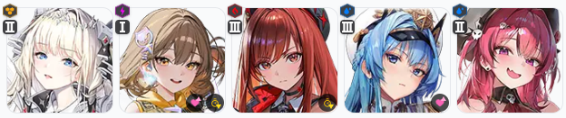
메스트를 라피에 몰아주는 조합입니다
애헬름 힐로 상당히 안정적인 조합이며 라피가 잘 키워져 있다면 추천드려용
아니스 크라운 라피 헬름 미하라
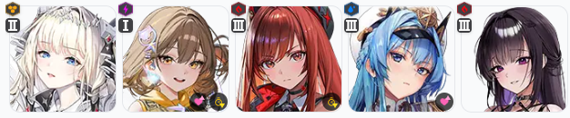
메스트 대신 미하라를 토템으로 넣는 조합입니다
미하라 육성만 되어 있다면 인디빌리아 조합으로 많이들 쓰시는 조합이고 버스트는 라피, 헬름만 눌러주시면 돼용
아니스 크라운 라피 미하라 메스트
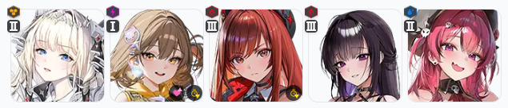
인디빌리아 짤패가 매우 아파서 체력 관리가 상당히 중요한 조합입니다
크라운 도발컨으로 머신건 땡겨 오고 엄폐컨 잘 하실 수 있다면 상당히 공격적인 조합이에용
저는 저레벨 때 이 조합으로 도전했었는데 꽤 많이 깎았던 기억이 있습니당
아니스 메스트 메앵커 라피 미하라
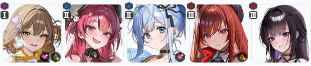
육성이 어느정도 되어 있다면 추천하는 MZ 인디 조합입니당
막페 넘어가면서 반드시 해야 하는 크라운 무적컨을 안해도 되고 안정성이 좋습니당
애매한 경계에 있는 저 같은 니청년들은 딜부족이 날 수 있으므로 나중에 사용해보도록 해봐용
주요 택틱 알아보겠슴당
헬름 선버 사용했고 암전 저지 들어갈 때 선버로 사용한 니케의 버스트가 돌아옵니당
인디빌리아 머리를 엄청 흔들어서 은근 코어 따라가는게 힘들어용
조준보정 사용해주세용
인디가 사용하는 짤 패턴 중 개별로 레이저 발사하는 패턴이 있습니당
쉴드 벗겨져 있다면 크라운은 역속성이라 한번에 가버리니 반드시 커서 잡고 엄폐 해주세용
인디빌리아에서 크라운 사용 시 가장 중요한 택틱인 무적컨입니당
막페 넘어가면 인디가 광역기를 사용하고 역속성인 크라운은 바로 터져버리는데
이걸 방지하기 위해 반드시 무적컨을 해주셔야 해용
무적컨 타이밍은 1:15 쯤 나오는 속성 저지 여유롭게 해주시고
저지 끝난 시점에서 크라운 스택을 18 스택으로 유지해주셔야 해용
유지 후 막페 넘어가서 쭉 사격하면 광역기랑 크라운 무적 타이밍이랑 맞아 떨어집니당
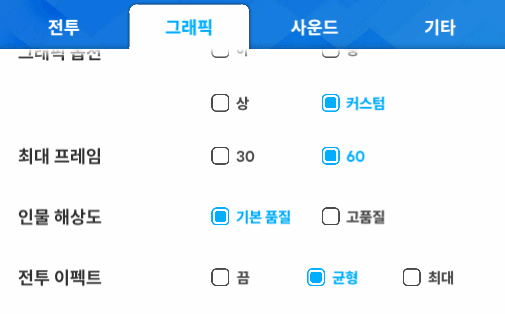
크라운 도발 스택이 확인 안된다면 설정을 확인해주세용
그리고 마지막 암전 저지에서 버스트 안켜져 있는 상태라면
이렇게 버충 땡기실 수 있습니당
2. 울트라
클리어 타임 2:40
추천 조합 보겠씁니당
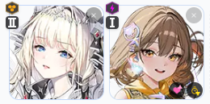
우선 1버, 2버는 신과 신으로 고정입니당
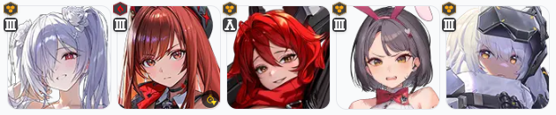
3버 추천입니당
수렐루는 고정으로 가져가주세용
그리고 육성에 따라 라피, 레후 사용해주시면 됩니당
저는 왜인지 모르겠는데 바밀크를 키워서 바밀크 쓰긴 했었어용
바밀크는 그렇게 추천은 안해용 손이 너무 많이가요!!!
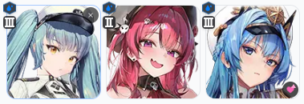
추천 토템 조합입니당
사용감은 프바가 젤 괜찮고 육성 상태에 맞게 사용해주시면 됩니당
물론 프바, 헬름은 애장품 기준이에용
주요 택틱 알아볼게용
우선 라피 선버 사용했고
수렐루는 저격 모드로 전환할 때 프바 버프 받으면 2번째 재장전은 스킵됩니당
탄 줄어드는 거 보시고 사격하시면 돼용
울트라는 조준 보정을 사용하지 않습니당
마지막에 코어 떨어져 나가기 전까진 조준 보정 되는 지점과 코어 달린 지점이 달라서 코어 타격이 안돼용
울트라 기관총 짤패도 엄청 아파용
힐이 없는 조합을 사용하신다면 반드시 엄폐해주세용
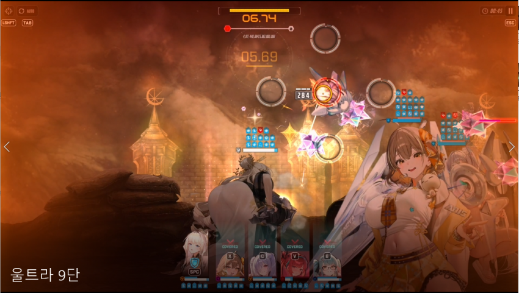
속저는 웬만하면 라피, 아니스 말고 다른 니케들로 해주세용
유탄이나 런처도 사고 나는 경우가 종종 있습니당
이외에는 속저 천천히 하기 정도가 있고 버스트 잘 조절 하시면 충격파+독 분사 패턴 둘 다 크라운 쉴드로 받아낼 수 있습니당
그리고 울트라 코어는 2, 4, 6, 8 단계에 재생되니 딜이 애매하다면 코어 분배해서 쳐서 아껴 가시는 게 좋슴둥
3. 미러 컨테이너
https://www.youtube.com/watch?v=mAYChRU3a3E
클리어 타임 2:03
추천 조합입니당
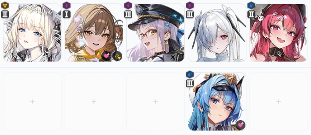
미컨은 거의 고정입니당
만약 네네온, 신데 중에 하나가 없다면 헬름 넣으셔도 돼용
조합은 크게 볼 게 없어서 주요 택틱 보겠습니당
미컨 속성 저지 이후 암전 저지로 이어집니당
신데를 후버로 사용 시 버스트 사용하면서 입장 가능하고 버스트 누수를 줄일 수 있고 신데 버스트 딜도 들어가용!
암전 저지는 크라운 잡고 해주세용
이외에는 딱히 중요하게 봐야할 택틱이 없습니당
네네온, 돌니스가 나오면서 난이도가 확 내려간 개체라 대충 쏘다 보면 죽어있을거에용
4. 크라켄
클리어 타임 2:12
추천 조합 보겠슴둥
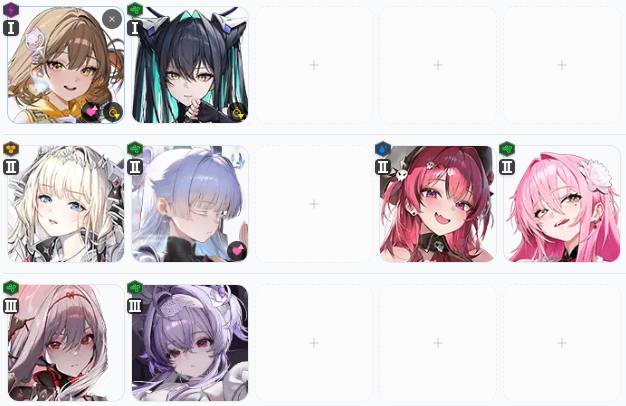
버스트 별로 정리했습니당
1버에서 고점은 아니스지만 크라켄 짤패에 잘 터지는 경향이 있습니당
안정성이랑 편의성은 세이렌 쪽이니 딜이 부족하다면 아니스, 편하게 하고 싶으시다면 세이렌 쓰시면 됩니당
2버는 사용하기엔 크라운 넣고 광역기 파훼하는 게 젤 편합니당
조합 별 장점을 보자면
크라운 - 나유타: 나유타를 딜러로 사용 가능하며 초기엔 나유타 힐로 광역기 파훼, 후반부엔 크라운 쉴드로 파훼
크라운 - 메스트: 크라운으로 안정성 챙기고 벨벳, 나유타 육성이 안되어 있다면 추천해용
크라운 - 벨벳: 벨벳 육성이 크게 안되어 있어도 사용 가능하며 크라운 버스트만 쭉 눌러주면 돼서 상당히 편합니당
3버는 고정입니당
주요 택틱 보겠습니당
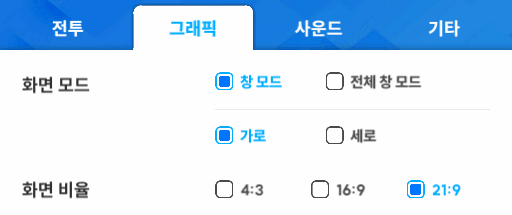
우선 오징어 다리가 화면을 탈출 하는 경우가 아주 많습니당!!!
21:9 창모드 사용해주시면 편하게 때리실 수 있어용
오징어 본체 코어 나오기 전까진 다리 코어 때리셔야 하는데 얘가 엄청 움직이니까 조준 보정 켜주시면 편할거에용
크라켄 저지는 크라운 잡고 해주세용
속저 이후에 나오는 크라켄 광역기는 크라운 쉴드, 엄폐로 파훼 가능합니당
짤에선 크라운만 쉴드가 벗겨지고 무적 스택도 없어서 잡고 엄폐해줬슴둥
이외에는 다리 나오면 얼른 깨서 크라운 쉴드 유지하기 정도가 있겠습니당
5. 하베스터
https://www.youtube.com/watch?v=bLKQ2VH4yF0
클리어 타임 1:52
추천 조합 보겠슴당!
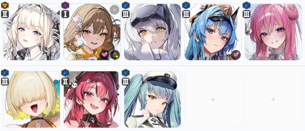
수로시 보다 육성이 안된 3버가 있다면 수로시 넣어주시고 딜량 비교해보시면 돼용
대부분은 애헬름이 더 괜찮았습니당
토템은 수레그, 메스트 사용해주시면 되고 이외에는 애프바 정도 쓸 수 있겠습니당
주요 택틱입니당
머리를 최대한 빨리 깨주세용!
이후에 머리 코어 타격 하시면 됩니당
필드가 잡몹으로 벌레들이 떨어져용
이 잡몹이 본체인 하베스터보다 공격력이 높아서 헬름 버스트 사용 시 벌레들한테 버스트가 꽂힙니당
헬름을 사용하신다면 벌레 다 지워진 거 확인하시고 버스트 사용해주세요!
이상으로 공략 마치겠습니당
질문은 댓글 달아주시면 확인하고 답변 드리겠슴당
다들 모듈, 장비 (몰래) 많이 드시길 바랄게용!